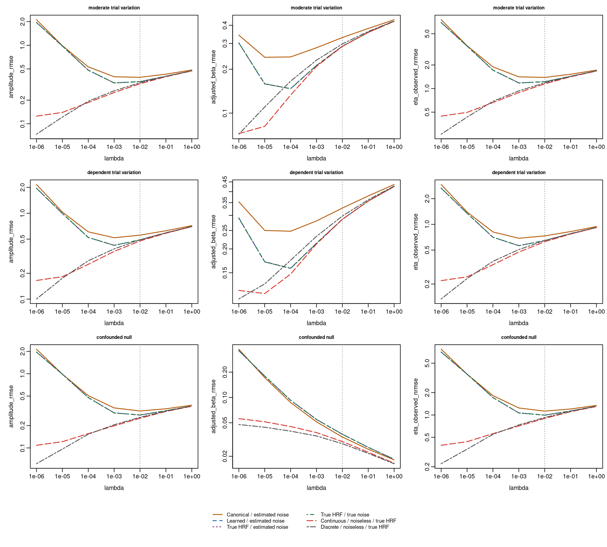
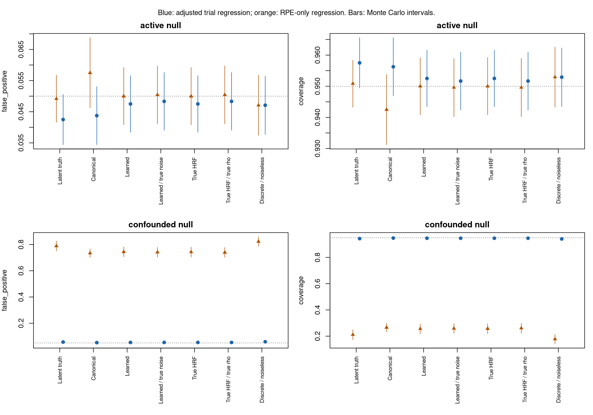
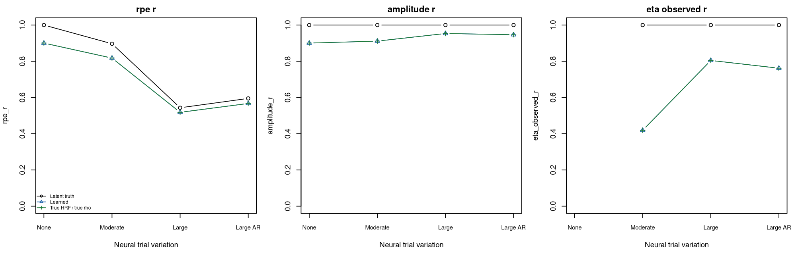

Parametric response recovery: trial variation, active nulls, and diagnostic references
Source:PARAMETRIC_RECOVERY_VALIDATION.md
This follow-up study asks whether deconvolution preserves actual neural trial amplitudes and supports valid inference about a parametric RPE effect. It adds genuine neural trial variability, task-active nulls and confounds, and paired references that separate sources of error. It exercises the native HRF and inverse implementation from PR #46; it does not change the package API or choose new deconvolution defaults.
The study is separate from the earlier 480-dataset HRF validation. The earlier generators, seed blocks, and results remain reproducible.
Main results
The evaluation completed all 600 datasets and 48,000 method/lambda rows. The strongest remaining limitation in these conditions is the combination of regularization and the instantaneous amplitude readout. Improving HRF selection beyond its current performance has little remaining benefit in this stable, in-library HRF setting.
With moderate neural trial variation, at the fixed primary lambda 0.01:
| Recovery method | Amplitude RMSE | Estimated RPE beta (true = 0.6) | Neural-beta CI coverage | RPE test power |
|---|---|---|---|---|
| Latent neural truth | 0 | 0.603 | 95.0% | 100% |
| Canonical HRF, estimated noise | 0.391 | 0.273 | 0% | 100% |
| Learned HRF, estimated noise | 0.344 | 0.315 | 0% | 100% |
| True HRF, true noise rho | 0.344 | 0.315 | 0% | 100% |
| True HRF, noiseless matched discrete signal | 0.333 | 0.303 | 0% | 100% |
Amplitudes and coefficients use the generating gain convention described below. The intervals target the underlying neural coefficient, not just its attenuated recovered value. Zero coverage means zero observed coverage in these 40 independent datasets; the conservative Monte Carlo upper boundary is 7.2%. Thus high detection power and high trial-amplitude correlation do not guarantee accurate neural amplitudes or intervals for the neural effect.
Learning the HRF improves amplitude RMSE over the matched canonical baseline by 0.0462 (paired Monte Carlo 95% interval: 0.0451–0.0474 improvement). Replacing the learned HRF with truth improves RMSE by only 0.000085; replacing the estimated rho with truth changes it by about 0.000004. Substantial shrinkage persists with both parameters known and measurement noise removed.
The regularization references explain this remaining loss. For the noiseless matched discrete signal, reducing lambda from 0.01 to zero decreases amplitude RMSE from 0.333 to 0.0295 and RPE bias from -0.297 to +0.00246. In noisy learned recovery, lambda zero has amplitude RMSE 7.50, so simply removing the penalty is not a useful solution. The curves expose an amplitude-bias/noise tradeoff; they do not establish a new default lambda.

Positive lambdas use logarithmic axes; lambda-zero results are retained in the tables. The vertical dotted line is the prespecified primary lambda.
The task-active nulls also distinguish misattribution from direct-effect tests:
| Null scenario, learned HRF at lambda 0.01 | Adjusted rejection rate | Monte Carlo 95% interval | RPE-only rejection rate |
|---|---|---|---|
| Active task, direct RPE effect zero | 4.75% | 3.84–5.66% | 5.00% |
| Active task with correlated confounds | 5.38% | 4.42–6.33% | 74.42% |
The confounded latent neural truth itself has 78.88% RPE-only rejection and 5.67% adjusted rejection. Much of the apparent RPE association comes from the generating task confounds. At the primary lambda, this study does not show clear excess null rejection after adjustment, given its Monte Carlo uncertainty. That conclusion does not remove the non-null amplitude bias.

Genuine trial variation changes what a useful correlation means. Increasing neural eta SD from 0.3 to 0.9 reduces the learned series’ RPE correlation from 0.818 to 0.518, while its correlation with actual trial amplitudes increases from 0.911 to 0.953. The latent truth’s RPE correlation also drops, from 0.897 to 0.543. RPE correlation alone would give the wrong impression about trial-level recovery across these scenarios.

These results prioritize testing amplitude-aware readouts or event-amplitude models, regularization chosen for the intended recovery target, and inference that accounts for the resulting attenuation. This PR supplies the diagnostic study; those algorithmic changes require separate implementation and validation. The conclusions concern the prespecified onset readout and these generating conditions, with all outcomes and lambda sensitivities retained for review.
What is generated
For each feedback event and voxel, neural amplitude is
a = voxel_gain * (1 + beta * RPE + confound_effects + eta)eta is genuine neural trial variation. It is independent of measurement noise and exogenous to the complete task design in the generating population. It is not orthogonalized against the realized RPE values: chance finite-sample correlations are part of the uncertainty that an RPE analysis must handle.
Each dataset has six independently simulated runs, 240 observations per run at TR = 1 s, and 12 voxels in two supplied parcels. Each run contains roughly 17 feedback trials, spaced 9–12 s apart, with separate preceding cue and response events. Cue and response amplitudes vary with their own task variables. There is substantial BOLD overlap even though ideal instantaneous neural impulses are separated at acquisition resolution.
Voxel gains are drawn from 0.75–1.25 in magnitude, with positive and negative responses. The two parcels have true HRF peak parameters of 5 and 7 s, stable across runs and represented in the candidate library. Continuous HRFs have unit signed integrated mass, and their sampled diagnostic kernels have unit signed sum. This fixes the simulation’s amplitude convention; it does not identify an absolute physiological gain from real BOLD.
Neural trial innovations have 35% common loading and independent voxel innovations. Measurement noise is stationary Gaussian AR(1), rho = 0.5 and marginal SD = 0.04, also with 35% common loading. Runs have independent innovations. Cross-voxel dependence is retained when calculating Monte Carlo uncertainty.
| Scenario | Direct RPE beta | Neural eta SD | Eta trial AR(1) | Task confounds |
|---|---|---|---|---|
no_trial_variation |
0.6 | 0 | 0 | No |
moderate_trial_variation |
0.6 | 0.3 | 0 | No |
large_trial_variation |
0.6 | 0.9 | 0 | No |
dependent_trial_variation |
0.6 | 0.9 | 0.6 | No |
active_null |
0 | 0.3 | 0 | No |
confounded_null |
0 | 0.3 | 0 | Yes |
confounded_effect |
0.6 | 0.3 | 0 | Yes |
The nulls retain strong cue, response, and mean feedback activity. In confounded scenarios, RPE depends on cue, response time, unsigned surprise, and previous RPE; surprise and previous RPE also affect feedback amplitude. Response time and cue variables influence event timing. These conditions create opportunities for misattributing other task activity to an RPE effect.
The continuous forward model independently evaluates analytic gamma densities at observation times relative to fractional event onsets. It does not call the package’s HRF, convolution, or event-design helpers. A separate matched discrete forward reference uses the same amplitudes, schedule, and noise innovations. It is a diagnostic for acquisition-grid mismatch, rather than an independent test of continuous forward-model accuracy.
Recovery and readout
HRF training uses free trial amplitudes, the supplied parcel groups, spatial strength 0.02, canonical strength 0.01, default calibrated evidence and pooled AR(1) noise estimation. RPE values and true amplitudes are never passed into HRF training. Target-run observations do not choose that target’s HRF.
All inverses use native C++, the second-difference penalty, demeaned inputs, ridge floor 1e-8, no tail padding, and no inverse nuisance projection. The fixed lambda grid is 0, 1e-6, 1e-5, 1e-4, 1e-3, 1e-2, 1e-1, 1. The primary lambda is prespecified as 0.01. Lambda zero disables the difference penalty; the numerical ridge floor remains. The study reports every lambda and does not select a winner using evaluation truth.
The feedback readout linearly interpolates the recovered neural series at the fractional onset. It divides by the ideal readout’s response to a unit neural impulse deposited on the acquisition grid: (1-f)^2 + f^2. This corrects only fractional-grid geometry. It does not divide by the inverse’s estimated recovery gain. The identical readout applied to the ideal neural truth returns the generating feedback amplitudes exactly. Cue and response impulses are far enough away to avoid ideal neural readout overlap.
This readout and normalization exist only in the validation scripts. They do not alter user alignment or truncation behavior.
Diagnostic references
| Method | HRF | Covariance used by inverse | Forward signal/noise |
|---|---|---|---|
canonical_estimated_noise |
Prespecified canonical | Estimated | Continuous + noise |
learned_estimated_noise |
Cross-run learned | Estimated | Continuous + noise |
learned_frozen_known_noise |
Same learned HRFs | True rho | Continuous + same noise |
oracle_hrf_estimated_noise |
True sampled HRFs | Same estimated rho | Continuous + same noise |
oracle_hrf_known_noise |
True sampled HRFs | True rho | Continuous + same noise |
learned_frozen_noiseless |
Same learned HRFs | Same estimated rho | Continuous, measurement noise removed |
oracle_noiseless_continuous |
True sampled HRFs | True rho | Continuous, measurement noise removed |
oracle_noiseless_discrete |
True sampled HRFs | True rho | Matched discrete, measurement noise removed |
oracle_noisy_discrete |
True sampled HRFs | True rho | Matched discrete + same noise |
latent_truth |
No inverse | No inverse | Actual neural impulses |
Noiseless conditions freeze fitting decisions made from noisy observations; they do not refit HRFs or attempt to estimate covariance from zero residuals. Known-covariance comparisons also freeze the learned HRFs. Thus they isolate the covariance application step, without silently changing HRF selection. The study does not separately quantify how supplying true covariance during HRF training would change selection.
“Known noise” here means the true within-voxel AR(1) correlation parameter, using the package’s innovation-variance whitening convention and the same fixed lambda. It does not introduce measurement-variance estimation or whitening across voxels. Covariance shape and regularization strength can interact.
Paired tables subtract the second method from the first:
| Contrast | First minus second | What it diagnoses |
|---|---|---|
shape_estimation |
Learned − true HRF, same estimated rho | Cost of HRF selection error |
covariance_application |
Learned/estimated rho − learned/true rho | Inverse covariance error at frozen HRF |
covariance_with_true_shape |
True HRF/estimated rho − true HRF/true rho | Covariance error with HRF error removed |
adaptive_vs_canonical |
Learned − canonical, same estimated rho | Increment from HRF adaptation |
measurement_noise |
True HRF noisy − true HRF noiseless | Measurement noise under the same inverse |
measurement_noise_fitted |
Learned noisy − learned noiseless | Measurement noise under the fitted inverse |
sampling_mismatch |
Continuous noiseless − discrete noiseless | Continuous/grid mismatch under the same inverse |
sampling_mismatch_noisy |
Continuous noisy − discrete noisy | Sampling mismatch in noisy data |
These contrasts are not an additive variance decomposition: the sources can interact, and regularization can improve one outcome while harming another. References with true parameters are not strict upper bounds. Regularization curves in the noiseless matched reference reveal penalty-related distortion plus the fixed ridge floor, centering and finite-run inverse boundary effects.
Outcomes and inference
The primary outcomes at lambda 0.01 are amplitude RMSE, observed eta NRMSE, adjusted RPE coefficient RMSE, interval coverage, and null rejection frequency. Additional outcomes retain neural/parametric correlations, amplitude sign errors, power, and the full regularization sensitivity curves.
-
neural_randneural_nrmsecompare centered recovered and true latent series in the interior, excluding the first and last 32 samples. No amplitude fit or rescaling hides shrinkage. -
amplitude_rmsecompares centered feedback amplitudes, in units of the generating voxel gain. Centering removes the unidentifiable neural offset after BOLD demeaning.amplitude_rmeasures actual trial-amplitude recovery. -
rpe_rmeasures correlation with RPE, oriented using the generating voxel sign. Its maximum need not be one when genuine trial variation is present. -
eta_randeta_gainpass the known eta component alone through the frozen inverse. They diagnose its attenuation and temporal distortion. -
eta_observed_randeta_observed_nrmsesubtract the known deterministic neural amplitudes from the recovered full readout. These also contain measurement noise and leakage/bias from other components. Both eta analyses use information available only in simulation; they are not estimators of unobserved trial noise in participant data. Eta metrics are undefined when eta SD is zero.
For each voxel and run, two regressions predict recovered feedback amplitude:
unadjusted: intercept + RPE
adjusted: intercept + RPE + cue + response_time + surprise + previous_RPEThe mean of the six run slopes estimates the voxel’s direct RPE effect. Its standard error is the SD of the six slopes divided by sqrt(6); intervals and two-sided tests use a t distribution with five degrees of freedom. Trials are never treated as independent replicates for these intervals. This allows dependence among trials within a run. It is an approximate procedure: run slope variances can differ, and cross-run HRF fitting can couple the run slopes. The simulation measures coverage rather than asserting that these intervals are calibrated after fitting.
In particular, an interval around a shrunken recovered coefficient need not cover the underlying neural coefficient, even if its standard error correctly describes variability around the shrunken value. Coverage failures should be read together with coefficient bias and the paired diagnostic references.
beta_bias, beta_rmse, and coverage target the generating population effect voxel_gain * beta, integrating over eta and measurement noise. Bias/RMSE are reported after division by the signed voxel gain. sample_slope_rmse instead compares recovered coefficients with coefficients computed from the actual realized neural amplitudes, distinguishing recovery error from chance neural/RPE associations in a finite dataset. These are different estimands.
For beta zero, false_positive is the fraction rejecting the direct-effect null at 0.05. For beta nonzero, power is the rejection fraction; sign_error and wrong_sign_rejection report erroneous coefficient directions. Under confounding, the RPE-only model has omitted-variable bias even for latent truth: its “false positives” are erroneous attribution to the direct RPE effect, not evidence of a broken t test for that model’s own marginal association.
Tests are per voxel. No whole-brain multiplicity correction is claimed or performed. These diagnostic intervals are not a new public inference API.
Replication, uncertainty and speed
The evaluation contains 40 independent datasets for each of the five non-null scenarios and 200 for each of the two nulls: 600 independent datasets, 3,600 runs, and 48,000 dataset/method/lambda rows. The development experiment uses three datasets per scenario. Distinct seed blocks prevent reuse of development datasets in evaluation:
development seed = 16000000 + original_scenario_index * 10000 + replicate
evaluation seed = 18000000 + original_scenario_index * 10000 + replicateThe complete protocol, primary endpoints, methods, lambda grid, source MD5s and seed rules are saved before generation. Development is used for debugging and numerical verification; no method or lambda is chosen from its results. Evaluation outputs cannot overwrite an existing experiment directory.
Voxel and run results are averaged within each independent dataset. Monte Carlo SEs and 95% intervals use variation across datasets. The number of voxels, trials or folds is never substituted for the number of independent datasets. For probabilities, intervals are clipped to [0,1]; an all-zero/all-one dataset fraction uses a conservative one-sided boundary bound based on the probability of any non-boundary dataset, rather than reporting certainty from zero empirical variance. Paired differences use unbounded Monte Carlo intervals.
At 200 independent null datasets, rare-event estimates still have meaningful Monte Carlo uncertainty. Interpretation should use the reported dataset-level intervals, rather than a binary judgment based on whether a mean is above 5%.
The study reuses native inverse operators across identical HRF/rho/lambda strata and applies grouped matrix multiplications. Trial regression factorizations are also reused. The evaluation runs in three independent scenario groups, each with one BLAS/OpenMP thread, so parallelism cannot change the datasets or the pairing. Numerical agreement with the public frozen-fit inverse is tested separately.
The three groups completed in 698.2, 685.4 and 698.9 seconds, approximately 11.7 minutes of concurrent wall time. These are timings for this small-voxel simulation, including all reference methods and lambda values; whole-brain fitting/application benchmarks remain in the PR #46 report.
Verification
All 65 focused test cases / 974 assertions pass, with no failures, errors, warnings or skips. New checks cover signed amplitude and mass conservation, exact fractional-onset neural readout, independent neural/noise decomposition, active nulls with an identified direct-effect coefficient, agreement with an independent t-test calculation, simulated normal-null calibration, cached inverse agreement with the public API, paired reference linearity, and dataset-level Monte Carlo calculations. Report assembly rejects incomplete or duplicated results, changed source hashes and incorrect seed provenance.
The focused suite also retains the existing HRF/evidence, GLS, linear inverse, voxelwise deconvolution, and native extraction checks. No unrelated full-package suite or participant-data validation is claimed.
Reproduce and inspect
Run from the repository root with this branch’s package installed. For example:
export FMRI_VALIDATION_LIBRARY=/path/to/installed/library
export OPENBLAS_NUM_THREADS=1
export OMP_NUM_THREADS=1
Rscript --vanilla inst/validation/run_parametric_recovery.R /tmp/pr-development development
Rscript --vanilla inst/validation/run_parametric_recovery.R /tmp/pr-evaluation evaluation
Rscript --vanilla inst/validation/report_parametric_recovery.R /tmp/pr-evaluation inst/validation/parametric_resultsThe optional third/fourth arguments override non-null/null dataset counts; the fifth is a comma-separated scenario subset. Original scenario indices keep seeds stable under subsetting. Disjoint subsets can run in separate directories under one parent; the report accepts that parent and verifies compatible frozen protocols, all expected method/lambda/dataset rows, seed provenance and absence of overlapping scenarios before combining them.
Files in inst/validation/parametric_results/:
-
primary.csv: all method/scenario means at the prespecified lambda. -
primary_intervals.csv: corresponding dataset-level Monte Carlo uncertainty. -
paired_primary.csv: paired diagnostic contrasts at the primary lambda. -
summary.csv.gz,paired.csv.gz: every outcome and lambda. -
replicate_metrics.rds: all independent-dataset rows, retaining pairing for alternative summaries without rerunning the simulations. -
fit_diagnostics.csv: dataset seeds, trial counts, covariance error, HRF error and noncanonical selection frequencies. -
settings.rds,provenance.txt: frozen protocols, source hashes and runtime details.
Scope and interpretation
This experiment deliberately holds acquisition timing, stable in-library HRFs, AR(1) measurement noise and the inverse algorithm fixed to make the new error comparisons interpretable. It does not establish performance for off-library or changing HRFs, sustained or nonlinear neural responses, non-AR noise, alternative TRs, censoring patterns, empirical backgrounds or whole-brain spatial structure. Those remain separate validation axes. It also does not establish an automatic lambda selector, correction for recovery gain, or a preferred alternative deconvolution algorithm.
The useful next algorithmic changes should follow the paired error contrasts: HRF work if shape estimation dominates, covariance work if whitening error dominates, acquisition/forward-model work if the matched reference improves recovery, or amplitude/readout/regularization work if substantial error remains with the true HRF and noiseless matched forward model.